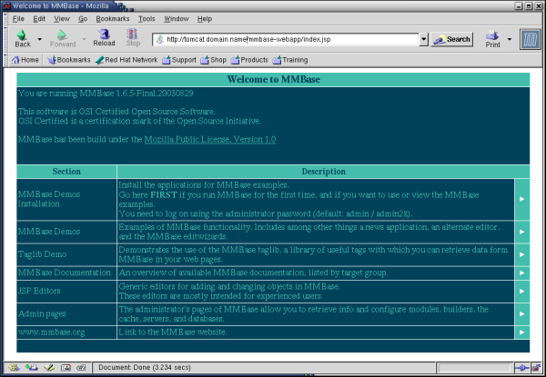

11. Running MMBase
Now you are ready to start Tomcat:
service tomcat start |
and access your new MMBase server through (replace <hostname> with your hostname):
http://<hostname>:8080/mmbase-webapp/ |
If everything you just did worked out, you should get the MMBase welcome screen where you can change the settings, look at the demos, and install the samples.

When asked for a login use the name admin and the password you just set in the security configuration file /usr/local/tomcat/webapps/mmbase-webapp/WEB-INF/config/security/context/config.xml.
MMBase users (i.e. front-end developers) will typically add their web files to the /usr/local/tomcat/webapps/mmbase-webapp/ directory. Applications (defining the content) will be placed in the /usr/local/tomcat/webapps/mmbase-webapp/WEB-INF/config/applications/ directory.
 | Tomcat consumes far more CPU and memory resources than Apache. Make sure the dimensions of your Tomcat/MMBase server system meet these requirements. |
 | Shutting down (or restarting) the Tomcat server (version 1.6) in our case always left a last process running. If you experience this same problem, kill the process by hand before starting it up again:
|
| You can save the original index.jsp file by renaming it to mmbase.jsp:
This will allow you to always access the original MMBase home page through (replace <hostname> with your hostname):
|
In case of any problems, check the Tomcat and MMBase log files in the directory /usr/local/tomcat/logs/ for hints.
>From here, we refer to the documentation on the MMbase website to complete your configuration and start using MMBase:
http://www.mmbase.org/docs/ |